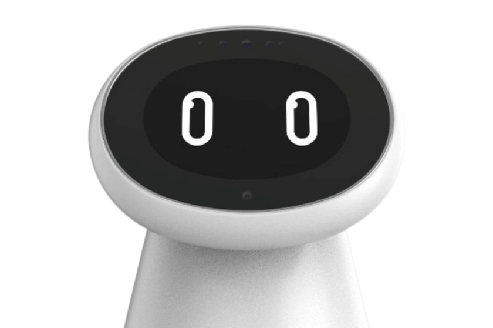
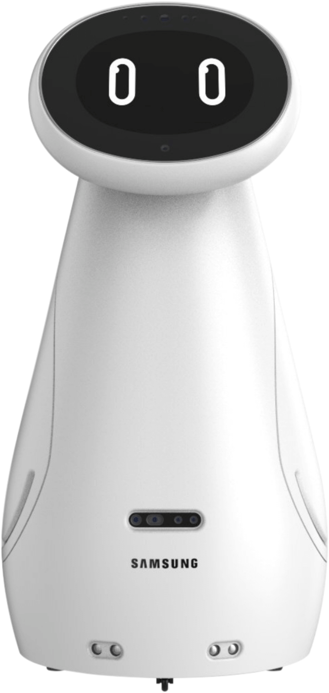
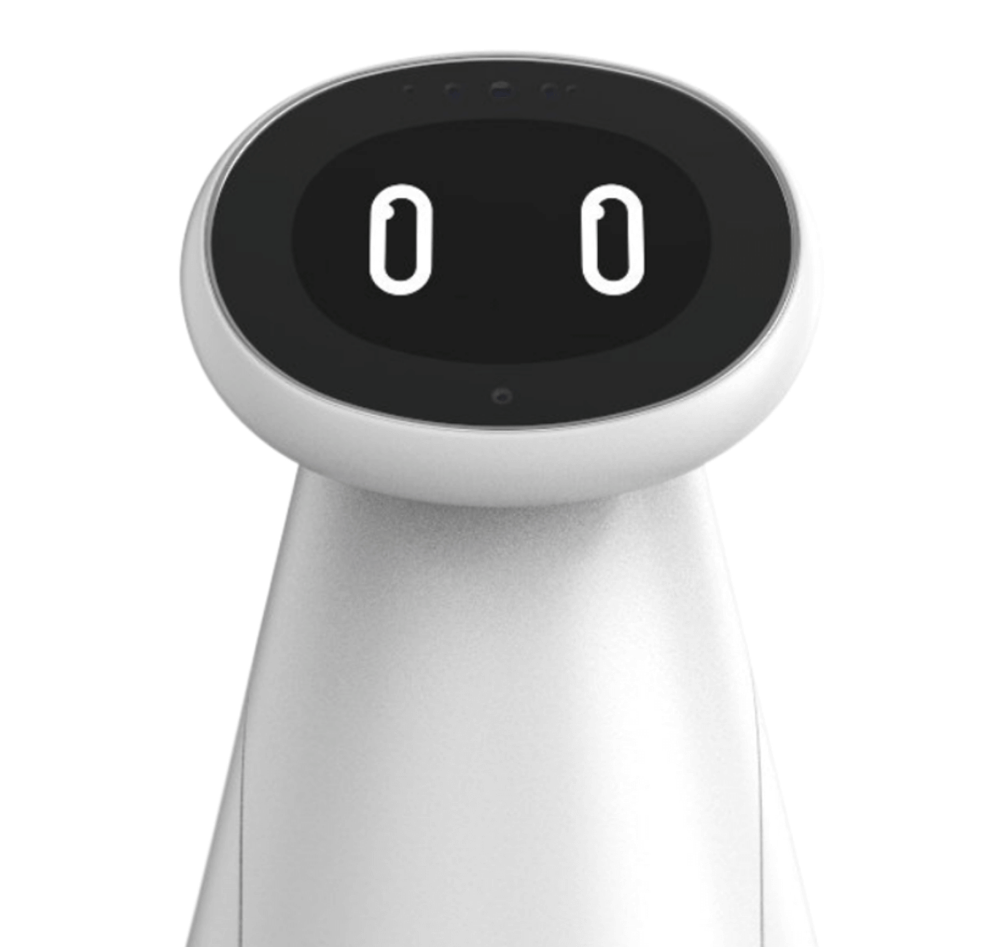

" 안녕, 라디야!" 라고 말해주세요.
다시 말해주세요.
안녕하세요.
저는 ADHD 아동을
빛나게 하는
인공지능 로봇 라디 입니다.
저는 아이와
눈을 맞춰 대화하며
눈을 맞춰 대화하며
아이의 생각을 분석해
올바르게 성장하도록
돕습니다.
올바르게 성장하도록
돕습니다.

라디는 ADHD 아동의 만족을 지지합니다.
내 아이가 으로 원하는 것만 한다는 것
충동적
라디는 내 아이의 행동을 지지하고
자신을 사랑하도록 응원합니다.
아이의 눈높이에서 경청하고 공감하는것, 그리고 칭찬과 격려를 통해 스스로 잘하는 것과 좋아하는것을 지지합니다.
우와, 지훈이는 ㅇㅇ엄청 잘한다! 나도 지훈이한테 배우고싶어!

아이는 산만한 것이 아니라
에너지가 넘치는 것입니다.
- 생각묻기
- 감정공감하기
- 이해하기
- 주관찾기
라디는 내 아이의 상태에 맞는 치료를 탐색합니다.
스마트밴드와 연동하여 아이의 신체와 전두엽 데이터를 측정합니다.
라디는 아이의 정보를 중심으로 대화하고, 분석합니다.
부모에게는 안심을, 아이에게는 안정을
라디는 아이의 ADHD 위험 단계를 파악하고, 아이 맞춤형 전문 의료진을 연결합니다.
보다 전문적으로, 보다 안정적으로 건강한 내 아이를 보듬기 위해 라디는 계속해서 학습합니다.